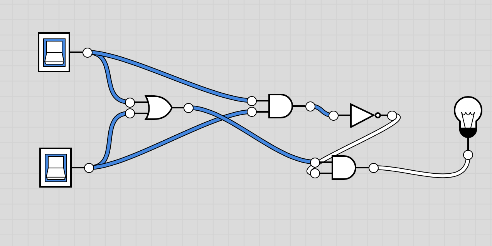

1. Write an explanation of abstraction, including at least one example, in your own words.
Abstraction is a general idea/ representation of something, like a place or an event, it is a condensed version of something you want to descripe. An example of abstraction is a phone, you know that a phone can connect you to others but you do not know the functions inside of a phone.
2. Give 2-3 examples of abstractions in everyday life not identified in the lecture.
Some examples of abstractions are cars, computers, and an ATM. These are examples of abstraction because you do not know the inner functions of these machines but you know the general idea that a car has a steering wheel and pedals that you can press to drive, and ATMs give you cash and deposit checks.
3. Consider an example of software, a mobile application, or a web site and explain how it is an abstraction.
Software, mobile application, and a website could be an abstraction because all these like i said previously is shown to be simple, like you wouldn't know the coding of a software but youll know that itll change something in your phone or computer. For a website or a mobile application you know that you can do something on this website or open the mobile app and be able to use it but you dont know what the coding behing making an app or website for it to run is.
1. Figure out what decimal value is represented by the following binary number 0011 1010 0011
The decimal value of this binary number is 931.
2. Represent the decimal value 517 as a binary number.
The decimal value of 517 is 1000000101
3. The binary number system is base 2 and has 2 digits. The decimal number system is base 10 and has 10 digits. The octal system is base 8. How many digits does it have? What are they, starting at 0?
The octal system has 8 digits. Yes, they start with 0, they are 0,1,2,3,4,5,6,7.
4. Suppose the number 523 is a base-8 octal number. What would its value be in decimal? In binary?
The value of 523 base 8 in decimals would be 339 and in binary it would be 101010011
5. Challenging: Convert the base-5 number 243 into decimal.
The value would be 73.
1. Insert a screenshot of your Logicly diagram for the Exclusive-OR circuit below.
2. Consider these three things: The OR gate (i.e., the physical circuit), the Boolean OR function (as defined by its truth table), and the OR symbol. How would arrange them from most abstract to least abstract? And what criterion would you use to determine their order?
The OR Symbol, the Boolean/function, OR Gate, The creterion I would use to determine their order is abstraction because all these switches are so intricate it would be hard to descibe the whole function
3. Consider these three things: A binary digit (e.g., 1 or 0), the flip-flop circuit diagram (), and the flip-flop circuit (i.e., the physical circuit). How would you arrange them from most abstract to least abstract and what criterion would you use to determine their order?
The most Abstract to the least Abstract would be A binary digit, flip-flop citcuit diagram, and the flip-flop circuit. The criterion I used to determine the most abstract to least abstract by also using abstraction.
1. What is a bit and what does it mean to say that "it's all just bits"? (Koan 1) Give examples of the things today that are stored in bits?
A bit is a unit of small information that are known as 0 or 1. When "it's all just bits" are said it means all the 0 or 1's are combined together on a computer to make a unit of information. Some examples are information stored in your computer, music players like spotify or pandora, Google Drive, Youtube, and basically everything on the internet.
2. Describe, in your own words, Moore's Law.
Moore's Law is how the processing power and speed of a computer would increase every year to become stronger/ more powerful than the year before.
3. Give an example of how the digital explosion is "neither good nor bad" but has both positive and negative implications.
An example of how digital explosion is "neither good nor bad" is data accessing (being able to access personal data), this could be a postive and netative because data accessing could save lives or it could expose something someone did. For example, there was this one mass shooting that happened and the mass shooter dropped his phone and the police force found it but they had no access. They tried to contact apple to unlock the phone and find out the reason behind his attack but apple rejected to unlock the phone because it is invasive to a persons privacy. This is neither bad nor good because nothing happened, nothing was touched.
4. Find and summarize a news article that talks about the positive or negative impacts of a computing innovation. Is the technology itself positive or negative? Or have people used the technology in positive and/or negative ways? Don't forget to LINK to your article!
This article talks about the postive impacts of alexa in newer car models and how a "digital assisant is one shout away". I think this technology is postive and negative because alexa's are useful for many things like phone calls, hands-off music and text messages, but it could also track your data/ following your data without you noticing. I believe this is mostly postive though because there are already alexa's implemented in houses that many people are using at this moment and it could do everything to turning on lights to turning on the stove which could be dangerous.
Article